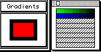
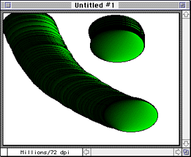

For more information
Other sections in this chapter discuss:
Creating a custom brush
To begin, you need a shape that you can pick up easily as a brush. To use
the brush later, you will also set the number of frames.
Type Command - Clear to return to the default settings.
Set the number of frames to 20.
From the Anim menu, choose Clear > All Frames and press Command - 1
to move to frame 1 of the animation.
Select a gradient as the foreground color, as explained in the
Studio/32 manual.

Figure 1: Gradient tear-off window.
Select the Ellipse tool and paint a circle about the size of a
quarter, using the Shift key to constrain the ellipse to a true circle.
Fill the circle radially by clicking the mouse inside.
From the Brush menu, choose Last Object >Brush to pick up the
circle as a brush (or press Command - B).
To prove that you have a custom brush, first paint with it on one
frame. The result should look like Figure 2.

Figure 2: Custom brush example.